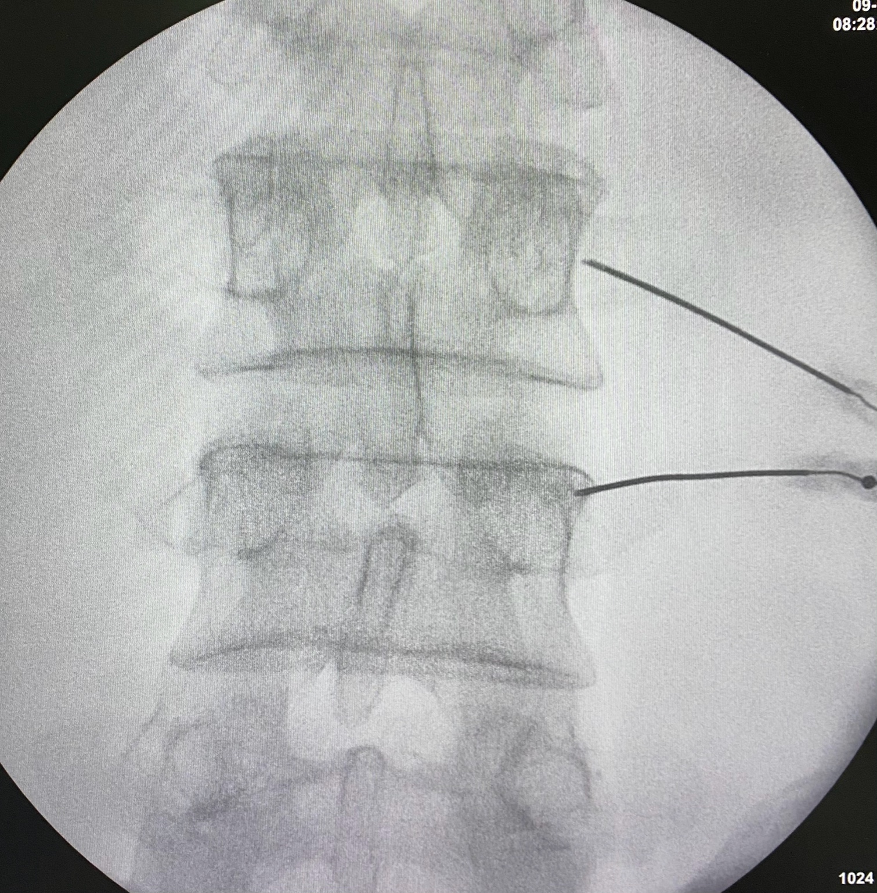
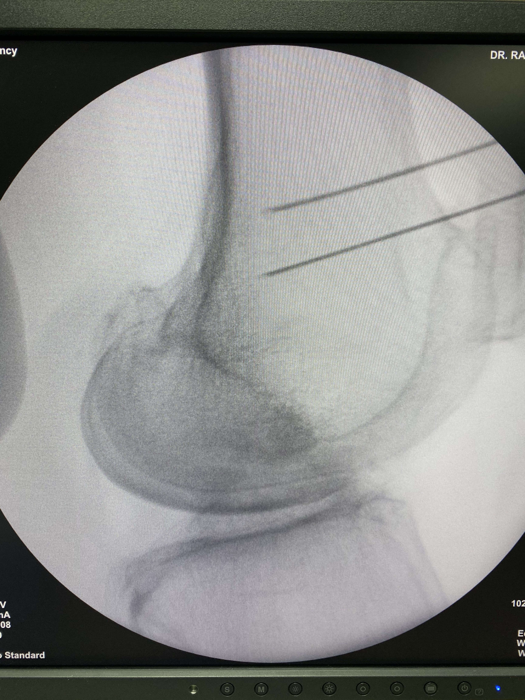

¿Qué es la Radiofrecuencia para el Control del Dolor?
La radiofrecuencia es un procedimiento médico mínimamente invasivo que utiliza corriente eléctrica de alta frecuencia para interrumpir la señal de dolor en nervios específicos. Se realiza mediante agujas especiales bajo guía de imagen, aplicando calor controlado sobre los nervios responsables del dolor.
- Procedimiento ambulatorio
- No requiere cirugía
- Alivio prolongado
- Menor uso de medicamentos
Radiofrecuencia en Columna Lumbar
Utilizada en pacientes con dolor lumbar crónico, especialmente por artrosis de las articulaciones facetarias. Se aplican ondas de radiofrecuencia sobre los ramos mediales lumbares para bloquear la señal dolorosa que viaja desde las articulaciones hacia el cerebro.
Radiofrecuencia en Articulaciones: Rodilla
En casos de artrosis avanzada o dolor persistente, se aplica radiofrecuencia sobre los nervios geniculados de la rodilla. Esta técnica bloquea el dolor sin afectar el movimiento, ofreciendo alivio prolongado.